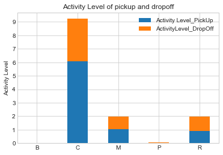
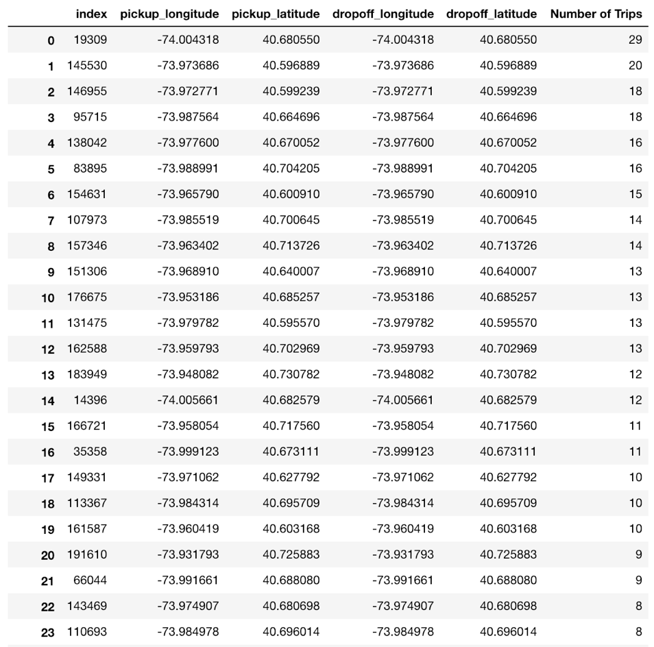

Part1. Introduction
In the New York City, the yellow taxi may be as iconic as Broadway and the Empire State Building. It is really an essential part of the urban life in the city of New York. Taken the taxi data with detail information such as taxi pick-up and drop-off time and locations, passengers
count, trip distance, and total fare amount as a whole, it is more than a collection of trip data but a story of the urban life in the New York City. Such data can tell the stories like how does the city's rush hour traffic look like, where does the crowding traffic head to, what is the taxi
commuting pattern in the city, and how can it be taken advantage by transportation engineers and traffic policymakers for improving the city traffic management.
To figure out how people in New York travel across the city through the yellow taxis within an
ordinary month of a year, what is the relationship between these taxi trips and city zoning
features, and what are the meaning and stories that can be extracted from their daily trip-level
data, we choose yellow taxi's data of the New York City in October 2015 as our analysis dataset,
which consists of trip information like taxi pick-up and drop-off time and coordinates,
passengers count, trip distance, and total fare amount.


By mapping and coloring the coordinates of each taxi pick-up trip and drop-off trip happening in
October 2015 in the New York City, we obtained two maps, one visualizes all pick-up trips of
October 2015 in New York City while the other one visualizes all drop-off trips of October 2015
in the New York City. From the results, we realize that Manhattan, as an extremely compact,
highly mixed-use and traffic-concentrated area, is too special for our analysis of the relationship between taxi trip and zoning features. Therefore, the analysis site is chosen to be zoomed to
Brooklyn, NY, instead of the entire city.
By zooming to Brooklyn, it is obvious that the pick-up trip map and the drop-off trip map have very different patterns. From the pick-up
trip map, we can tell most of the pick-up trips in Brooklyn in October happen within 5 miles
around Manhattan and area close to
John F. Kennedy International
Airport. While from the drop-off
trip map, the pattern is quite
different as the drop-off trips,
instead of gathering in the certain
area, scatter around the entire
Brooklyn.
It is obvious that Brooklyn has
much more drop-off trips than
pick-up trips, which means,
people are more likely to take
taxis to Brooklyn, while few of
them take taxis from Brooklyn.
The reason of rare pick-up trips
departing from Brooklyn might
be that the yellow taxis are
mainly concentrated in the
borough of Manhattan, although
it can be hailed anywhere within
the five boroughs of New York City with a raised hand or by waiting at a taxi stand. Therefore, we assume that in Brooklyn,
people living far away from Manhattan are less likely to hail a yellow taxi.
Part2: Commercial FAR and Residential FAR
The results of above analysis make us curious about Brooklyn people's daily travel pattern
through the yellow taxis in certain time period of a day and in certain days of a week, which trips
are the most typical ones in Brooklyn, and make us wonder whether it will show some
relationships with the zoning features, specifically, the commercial and residential districts. We looked at the commercial FAR and residential FAR in Brooklyn based on taxi zone and
found out that the places with relatively high commercial FAR are clustering around Manhattan
(Red Hook, Gowanus, Downtown Brooklyn/ Metrotech, Brooklyn Heights, DUMBO, Brooklyn Navy Yard, and Williamsburg (North Side) etc.) and in the Southern Brooklyn (Marine
Park/Floyd Bennett Field, Coney Island etc.). While the places with relatively high residential
FAR are also clustering in the northern Brooklyn (Williamsburg (North Side), Williamsburg
(South Side), Downtown Brooklyn/ Metrotech, Brooklyn Heights, DUMBO, Brooklyn Navy
Yard, Boerum Hill, Prospect Heights, Park Slope, and East Flatbush, etc). However, generally
speaking, commercial FAR and residential FAR show the same pattern in Brooklyn since taxi
zones with higher commercial FAR also tend to have higher residential FAR. In addition, from
the two FAR maps, it is obvious that northern Brooklyn has higher commercial and residential
FAR than any other area in Brooklyn, which means northern Brooklyn is relatively denser area
in Brooklyn and matches what we observed from the pick-up trip map and the drop-off trip map--more taxi trips happened in northern Brooklyn, closer to Manhattan. Therefore, we assume that
denser places with more population would generate more taxi trips. This is furthered analyzed in
the next part when using Spearman's rank correlation analysis.


Part3: Correlation Analysis
We conduct Spearman's rank correlation analysis to verify the above assumption. The results
show that no matter for overall taxi trips in Brooklyn in October 2015, or weekend taxi trips in
Brooklyn in October 2015, or weekday taxi trips in Brooklyn in October 2015, they all show
positive relationships with the Average Commercial FAR and Average Residential FAR
calculated based on taxi zone, with some slight difference. Generally speaking, the Spearman's
rank correlation coefficient, or the statistical dependence between the rankings of two variables
of the taxi pick-up trips of October 2015 in Brooklyn and the Average Commercial FAR
(calculated based on taxi zone) is around 0.48; the Spearman's rank correlation coefficient of two
variables of the taxi drop-off trips of October 2015 in Brooklyn and the Average Commercial
FAR is around 0.44; the Spearman's rank correlation coefficient of two variables of the taxi pickup
trips of October 2015 in Brooklyn and the Average Residential FAR is around 0.7 (calculated
based on taxi zone); the Spearman's rank correlation coefficient of two variables of the taxi dropoff
trips of October 2015 in Brooklyn and the Average Residential FAR is around 0.68. To
summarize, the taxi trip data of October 2015 in Brooklyn has a stronger positive relationship
with residential FAR than commercial FAR. In other words, the high average residential FAR of a taxi zone is more related to the high volume of taxi trips in Brooklyn than high average commercial FAR.
However, based on two maps of commercial FAR and residential FAR in Brooklyn, it can not be
concluded that there is or is not a relationship between taxi trips and zoning features. Therefore,
to answer this questions, further analysis is conducted in the next section.

Part4: Zoning Features
According to New York City Zoning regulations, Brooklyn is divided into five basic zoning
districts: Residential Districts(R), Commercial Districts (C), Manufacturing Districts (M), Park
Areas (P) and Battery Park (B) to distinguish various building forms and permitted uses.
We calculate the percentages of different Zoning Features in Brooklyn, the result of which show
that 16.26% of Brooklyn are manufacturing districts, 12.77% are park area, 3.72% are
commercial districts, while most of the areas are residential districts that account for 67.23% of
the total area in Brooklyn.
We also calculate the percentages of pick-up trips and drop-off trips in different land zones of
Brooklyn, in other words, we calculate how many percentages of pick-up trips departed from
either residential districts, commercial districts, manufacturing districts, park areas or Battery
Park, and how many percentages of drop-off trips arrived in either residential districts,
commercial districts, manufacturing districts, park areas or Battery Park. The results show that
for the pick-up trips, the rare percent of trips departed from park areas or Battery Park while
about 16.89% of the pick-up trips departed from manufacturing districts, 22.61% of the pick-up
trips departed from commercial districts, and most of the pick-up trips (60.09%) departed from
residential districts. And for the drop-off trips, also the rare percent of trips arrived in park areas
or Battery Park while about 15.43% of the pick-up trips arrived in manufacturing districts, 11.72%
of the pick-up trips arrived in commercial districts, and most of the pick-up trips (72.52%)
arrived in residential districts.

In order to measure the activity level of different zoning districts, we respectively divide
percentage of pick-up trips ("Percentage_of_PickUp" column in the table) by the percentage of
zoning district area ("Percentage_Of_Area" column in the table), and divide percentage of dropoff
trips ("Percentage_of_DropOff" column in the table) by the percentage of zoning district area
("Percentage_Of_Area" column in the table). Therefore, we have the activity levels of both pickup
and drop-off trips. From the results (column "ActivityLevel_PU" and "ActivityLevel_DO")
in the table, it is obvious that in Brooklyn, the commercial districts have the highest level of taxi
pick-up activity, with the activity level value being 6.08 compared with that of manufacturing
districts (1.04) and residential districts (0.89). The commercial districts also have the highest
level of taxi drop-off activity, with the activity level value being 3.14 compared with that of
manufacturing districts (0.95) and residential districts (1.08). In other words, more people hail
taxis in the commercial districts to somewhere else, and more people take a taxi to the
commercial district through a taxi, compared with the taxi activities in residential districts and
manufacturing districts.
Comparing the level of taxi pick-up activity (6.08) and the level of taxi drop-off activity in the
commercial districts (3.14), we can conclude that people are more likely to hail taxis when they
leave the places in the commercial districts such as shops, offices, theaters, restaurants than they
come to the commercial districts.
From the above analysis, except that more pick-up trips departed from the residential district
instead of the commercial districts and more drop-off trips arrived in the residential district
instead of the commercial districts, two patterns of all pick-up and drop-off trips in the
commercial districts show that in the mid of the day, there is a trend of increasing pick-up and
drop-off trips in the commercial area, compared with the same time period in the figure showing
the pattern of all pick-up and drop-off trips in the residential districts. Therefore, we can
conclude that in the mid of the day, compared with other time periods in a day, commercial
districts are more likely to expect the increasing trips than the residential districts, no matter for
the pick-up or drop-off trips.
Part5. Descriptive Analysis
We are also curious about what is Brooklyn people's daily travel pattern through the yellow taxis
in certain time period of a day and in the certain days of a week and which trips (which
originations and destinations) are the most typical ones in Brooklyn.
From the analysis shown above, in October 2015, there would be more taxi trips on Saturday
than other days in a week, no matter for drop-off trips or pick-up trips.
In addition, in days of October 2015, Brooklyn has much more drop-off trips in Brooklyn from
10:00 pm to 0:00 am than any other time period, while has more pick-up trips from 11:00 pm to
1:00 am. In addition, it is obvious that there are much more drop-off trips (with maximum 50000 volume on Saturday) than pick-up trips (with maximum 12000 volume on Saturday) in Brooklyn,
which matches what we found in the previous analysis.
From the additional visualization of hourly yellow taxi pick-up and drop-off trips in Brooklyn
above, we found that the taxi travel patterns are different on weekdays and on the weekend. From the additional visualization of hourly yellow taxi pick-up and drop-off trips in Brooklyn
above, we found that the taxi travel patterns are different on weekdays and on the weekend.

Part6. Typical pick-up and drop-off trips
To identify the most typical pick-up and drop-off trips and their destinations and originations in
Brooklyn, we cluster all pick-up and all drop-off trips into 50 groups on weekdays and on
weekend respectively in four maps. In the map, pink points represent originations while blue
points represent destinations.
Comparing two typical pick-up trip maps on weekdays and on weekend respectively, the
common thing is that the originations of most typical pick-up trips, no matter on weekdays and
on weekend, are concentrating in west Brooklyn around Williamsburg and Brooklyn Heights.
The difference is that for all pick-up trips on weekdays, trips from Brooklyn to John F. Kennedy
International Airport become typical, compared with all pick-up trips on weekend, in other
words, more people take taxis from Brooklyn to the airport on weekdays.
Comparing two typical drop-off trip maps on weekdays and on weekend respectively, the
common thing is that the destinations of most typical drop-off trips, no matter on weekdays and
on weekend, are concentrating in northwest Brooklyn around Bedford-stuyvesant, Red Hook,
Williamsburg, and Brooklyn Heights. The difference is that for all drop-off trips on weekdays,
there are more typical trips from Manhattan to Brooklyn, compared with all drop-off trips on
weekend, in other words, more people take taxis from Manhattan to Brooklyn on weekdays.
Part7. Popular Trips
To identify the most popular pick-up and drop-off trips, we group pick-up and drop-off trips
respectively according to their pick-up (origination) longitude, pick-up latitude, drop-off
(destination) longitude, and drop-off latitude. The results show that the most popular pick-up and
drop-off trips in Brooklyn are the ones have same location coordinates for both originations and
destinations. In other words, the most popular pick-up and drop-off trips are those without trip
distance.

Interestingly, when we figure out the trip cost of those popular trips without any trip distance,
they are not zero! This might because of the disordered taxi meters or the frauds!
Part8. Conclusion
In our analysis, we identify certain relationships between people's behaviors of taking yellow
taxis and the zoning characteristics of land, for example, more people hail taxis in the
commercial districts to somewhere else, and more people take a taxi to the commercial district
through a taxi, compared with the taxi activities in residential districts and manufacturing
districts. People are also more likely to hail taxis when they leave the places in the commercial
districts such as shops, offices, theaters, restaurants than they come to the commercial districts.
In addition, we also identify few characteristics of the yellow taxi's data of Brooklyn in October
2015: we found that there are much more drop-off trips than pick-up trips in Brooklyn and there
would be more taxi trips on Saturday in Brooklyn than any other day in a week, no matter for
drop-off trips or pick-up trips. We also visualize the typical trips and identify the populous trips
in Brooklyn in our analysis, which provides a more narrative story of yellow taxi activity in
Brooklyn.